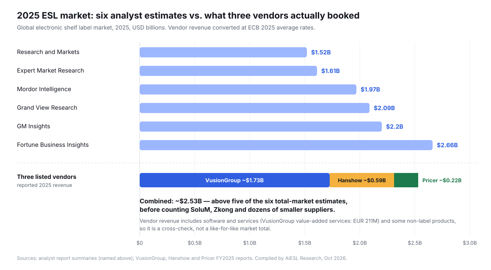

This page is a reference, not a forecast of our own. We compiled every free-to-read headline estimate we could find, set them side by side with the definitions behind them, and cross-checked them against the two kinds of data that cannot be revised after the fact: audited vendor revenue and counted unit shipments. We manufacture electronic shelf labels, so we have an interest in the market growing — which is exactly why this page also shows the numbers that cut against the growth story. For what the market means for a single store’s budget, see our ESL cost guide.
How Big Is the Electronic Shelf Label Market in 2025 and 2026?
What does every published estimate say?
The estimates cluster around $2 billion for 2025, but the highest is 1.75 times the lowest, and long-range forecasts diverge even more — from $3.8 billion by 2030 to $11.2 billion by 2035. The table lists each firm’s publicly available headline figures exactly as published, with its own base year and forecast window.
| Research firm | 2025 | 2026 | Long-range forecast | CAGR (period) |
|---|---|---|---|---|
| Research and Markets | $1.52B | $1.78B | — | 17% (2025–2026) |
| Expert Market Research | $1.61B | — | $11.19B by 2035 | 21.4% (2026–2035) |
| Mordor Intelligence | $1.97B | — | $3.78B by 2030 | 13.9% (2025–2030) |
| Grand View Research | $2.09B | $2.39B | $7.32B by 2033 | 17.4% (2026–2033) |
| GM Insights | $2.2B | $2.5B | ~$7.4B by 2035 | 12.7% (2026–2035) |
| Fortune Business Insights | $2.66B | $3.03B | $8.45B by 2034 | 13.7% (2026–2034) |
Sources: publicly available report summaries from each firm, accessed October 2026 (links under Sources). Full reports are paywalled; we have not seen their underlying methodology.

Which number should you quote?
If you need a market size for a board paper or business plan, quote the range and the median — “roughly $1.5–2.7 billion in 2025, median about $2.0 billion” — and name your sources. If you need a single figure, take one firm’s base year and its own growth rate together. Combining one firm’s 2025 value with another firm’s CAGR produces a forecast nobody published. Our buyer guides on electronic price tags and types of electronic shelf labels cite Grand View Research and Mordor Intelligence; this page is the reference that puts those figures in context.
Why Do ESL Market Size Estimates Disagree?
Because they are not measuring the same thing. “Electronic shelf label market” can mean the label hardware alone, the full system a retailer buys, or everything a retailer spends on the project. The five definitional choices below explain most of the spread.
| Choice | Narrow version | Broad version | Effect on the number |
|---|---|---|---|
| Scope | Label hardware only | Labels + gateways + software + installation + services | Broad scope can be well over 1.5× the hardware value. |
| Value-chain level | Component (e-paper module) cost | Finished system price paid by the retailer | Module value is a fraction of system value. |
| When the base year was modelled | “2025” projected from 2023–24 data | 2025 updated with actual shipments | Older models missed the 2025 Walmart surge. |
| Currency and pricing region | Chinese domestic prices, converted to USD | European and US system prices | The same label can be booked at very different prices. |
| Forecast horizon | To 2030 | To 2035 | Longer horizons compound assumptions; CAGRs are not comparable. |
Framework: AiESL Research. Definitions vary by report and are usually described only in the paid edition.
Two adjacent categories make the confusion worse. E-paper display reports value the screens inside labels, e-readers and signage together, and smart shelf reports wrap ESLs into a wider bundle of sensors and cameras (see below). Neither is the ESL market, but both are regularly quoted as if they were.
What Do Vendor Revenues Say? A Bottom-Up Check
VusionGroup, Hanshow and Pricer together reported about $2.53 billion of revenue for 2025 — more than five of the six estimates for the entire global market. Company revenue is audited and cannot be revised after the fact, which makes it the most useful sanity check on any market-size figure.
| Vendor (listing) | FY2025 revenue, reported | ≈ USD | Change vs 2024 | What drove it |
|---|---|---|---|---|
| VusionGroup (Euronext Paris) | EUR 1,527M adjusted (EUR 1.47B IFRS) | ~$1.73B | +51% | Walmart US rollout; value-added services doubled to EUR 211M. |
| Hanshow (Shenzhen ChiNext) | CNY 4,212M | ~$0.59B | −6.1% | Listed March 2025; H1 weaker, Q4 recovery. |
| Pricer (Nasdaq Stockholm) | SEK 2,147.9M | ~$0.22B | −16% | Customers paused purchasing and delayed tenders. |
| Three vendors combined | — | ~$2.53B | — | Excludes SoluM, Zkong, Minewtag, Displaydata and hundreds of smaller suppliers. |
Sources: VusionGroup, Hanshow and Pricer FY2025 reports. USD conversion by AiESL at ECB 2025 annual average rates (EUR/USD 1.1300, EUR/CNY 8.1180, EUR/SEK 11.0671).
Is the comparison fair?
Not perfectly, and the caveats matter. Vendor revenue includes software, services, rails and, for VusionGroup, products beyond labels such as shelf cameras. But the gap is too large to explain away: strip out VusionGroup’s entire value-added-services line (about $0.24 billion) and the three companies still booked roughly $2.3 billion — before counting SoluM, the large Korean supplier, or the many Chinese manufacturers, ourselves included, that sell under their own brands or as OEMs.
Our reading: the lower published estimates look like pre-surge baselines. Actual 2025 spending on ESL systems was most likely at or above the top of the published range. That does not make the long-range forecasts wrong — it means the starting point most of them compound from is probably too low, and the 2025 jump was concentrated in one customer.
How Many Electronic Shelf Labels Are Shipped Each Year?
About 540 million ESLs shipped worldwide in 2025, up 88% on 2024, according to RUNTO — and the first half of 2026 fell 41.9% to about 170 million as Walmart’s bulk orders finished. Units are the cleanest measure of adoption because they are not distorted by pricing or currency.
| Period | ESL finished labels | E-paper modules (all uses) | Context |
|---|---|---|---|
| Full year 2025 | ~540 million (+88.0%) | ~580 million (+87.8%) | Labels were about 95% of all e-paper modules shipped. |
| First half 2026 | ~170 million (−41.9%) | ~202 million (−41.4%) | Walmart order wave over; HKC entered as the fourth-largest module maker. |
Source: RUNTO global e-paper industry reports, full-year 2025 and H1 2026. Quarter-by-quarter detail, tag-size mix and module-maker shares are in our Walmart digital shelf labels analysis.
How much of that was Walmart?
RUNTO estimates that about 350 million labels for the Walmart project had been delivered by the end of 2025, with roughly 100 million left to install in 2026. In other words, one retailer accounted for well over half of global unit demand in its peak year. That is why 2026 unit comparisons look so weak — and why they say little about adoption by everyone else.
What does one label “cost” at market level?
Divide a $2.0 billion market by 540 million labels and you get under $4 per label, all-in; even using vendor revenue it is under $5. That is well below the $5–$20 per tag a mid-size retailer is typically quoted. The gap is real: mega-orders of 1.5–2-inch tags are priced at volumes no regional chain can match, and revenue is often recognised at installation, months after the labels ship. Market averages are not your price. Use the cost guide and the ROI calculator for a store-level budget.
Which Regions Lead the ESL Market: North America, Europe or Asia?
North America became the largest ESL region in 2025 on the back of Walmart, overtaking Europe, where electronic shelf labels were pioneered and where 2025 spending fell. Regional market reports and vendor disclosures tell the same story from different angles.
| Region or country | Data point | Source |
|---|---|---|
| North America | ~$0.79B in 2025; forecast $3.46B by 2035 (15.8% CAGR) | Towards Packaging |
| North America share | Largest region, ~38% of global revenue in 2025 | Grand View Research |
| United States | $255M in 2024; forecast $1,175M by 2033 (18.5% CAGR) | IMARC Group |
| EMEA (vendor view) | VusionGroup EMEA revenue EUR 414.6M in 2025, −15.8%; 27% of group | VusionGroup FY2025 |
| Outside EMEA (vendor view) | VusionGroup Americas + APAC EUR 1.11B in 2025, +115%; the US is its largest market | VusionGroup FY2025 |
| H1 2026 (vendor view) | VusionGroup EMEA EUR 209M (+6%); outside EMEA EUR 630M (+39%) | VusionGroup H1 2026 |
Sources linked under Sources.
Note the mismatch in the US numbers: one vendor booked more than EUR 1 billion outside EMEA in 2025, mostly in the US, while one widely cited US market estimate starts from $255 million in 2024. That is the same baseline lag seen in the global figures. In Europe, the 2025 dip was a pause rather than a reversal — Pricer and SoluM both described customers delaying tenders amid geopolitical uncertainty, and VusionGroup’s EMEA revenue returned to growth in the first half of 2026. For how US grocers are actually using the labels, see digital price tags in grocery stores.
Is the Smart Shelf Market the Same as the ESL Market?
No. A smart shelf combines electronic shelf labels with sensors, cameras, RFID and analytics, so smart-shelf market estimates include ESLs and are roughly twice as large. Adding the two together double-counts the labels.
| Market | 2025 size | What it includes | Relationship to ESL |
|---|---|---|---|
| Electronic shelf labels | ~$1.5–2.7B | Labels, gateways, ESL software, services (scope varies) | The subject of this page. |
| Smart shelves | $4.77B (forecast $5.72B in 2026, $11.39B by 2030) | ESLs plus weight sensors, cameras, RFID, analytics | A superset — contains ESL. |
| E-paper modules | ~580M units (2025) | Display modules for labels, e-readers, signage | A component inside each label. |
Sources: The Business Research Company (smart shelves); RUNTO (e-paper modules); ESL range from the estimates table above.
The direction of travel is toward the bigger box: vendors are adding cameras and AI on top of the label network, which is why ESL revenue is increasingly software and services. What that looks like in practice — and which claims hold up — is covered in What Is an AI ESL? and AI dynamic pricing with ESL.
What Happens to the ESL Market in 2026?
2026 is a down year for units and an up year for the market leader’s revenue. Global ESL shipments fell 41.9% in the first half, yet VusionGroup grew adjusted revenue 29% to EUR 839 million (+37% at constant exchange rates and tariffs) and kept its full-year guidance of 15–20% growth. Installations lag shipments, and recurring software revenue keeps growing after the hardware wave has passed — VusionGroup’s value-added services rose 39% in the half.
| Indicator | 2026 reading | What it signals |
|---|---|---|
| Analyst 2026 forecasts | $1.78B–$3.03B | All four firms that publish a 2026 figure expect growth in value. |
| Global ESL units, H1 | ~170M, −41.9% | Post-Walmart hangover in hardware volume. |
| VusionGroup revenue, H1 | EUR 839M adjusted, +29% | Installation and software revenue still flowing. |
| VusionGroup full-year guidance | +15–20% at constant rates | Leader expects growth despite lower unit volume. |
| Walmart remaining volume | ~100M labels to install in 2026 | The last tranche of the largest ESL project to date. |
Sources: Research and Markets, Grand View Research, GM Insights, Fortune Business Insights; RUNTO; VusionGroup H1 2026 sales release.
The question for 2027 is whether the next wave of retailers arrives on schedule. RUNTO expects new retail digitisation projects to start releasing orders from the second half of 2026; we track the candidates in what comes after Walmart. Signals worth watching: VusionGroup’s full-year 2026 results, RUNTO’s second-half shipment count, and whether Hanshow and Pricer return to growth.
What Do the Market Numbers Mean If You Are Buying ESLs?
A post-peak market favours buyers, but a concentrated one rewards caution about lock-in. Four practical implications:
- Capacity is available. With unit shipments down by about 40% year on year, module makers and label vendors have spare capacity and are competing for the next projects. It is a good moment to run a pilot and negotiate — our cost guide shows what to budget.
- The market is concentrated. Two vendors shipped roughly two-thirds of finished labels in early 2026. Ask how your system would survive a change of vendor; we explain the trade-offs in open vs closed ESL systems.
- Revenue is shifting to software. The leader’s fastest-growing line is recurring services. Ask for a five-year cost including subscriptions and see cloud vs on-premise ESL software before you sign.
- Your business case is local. Market growth rates tell you nothing about your payback. Model it with your own wages, SKU count and price-change frequency in the ESL ROI calculator.
For a supplier shortlist, our guide to comparing electronic shelf label manufacturers covers what to check beyond price.
Sources
- Research and Markets — Electronic Shelf Label Market Report 2026
- Expert Market Research — Electronic Shelf Label Market
- Mordor Intelligence — Electronic Shelf Labels Market
- Grand View Research — Electronic Shelf Label Market Report, 2026–2033
- GM Insights — Electronic Shelf Label Market, 2026–2035
- Fortune Business Insights — Electronic Shelf Labels Market
- Towards Packaging — North America Electronic Shelf Label Market
- IMARC Group — United States Electronic Shelf Label Market
- The Business Research Company (via Research and Markets) — Smart Shelves Market Report
- VusionGroup — 2025 annual results
- VusionGroup — First-half 2026 sales
- Pricer AB — Year-end report January–December 2025
- Hanshow Technology — 2025 annual report (CNINFO, Chinese)
- RUNTO — Global e-paper industry review, full-year 2025
- CNMO, reporting RUNTO — H1 2026 global e-paper module and ESL shipments (Chinese)
- Bank of Finland — ECB euro reference rates, 2025 annual averages